本节聚焦于计算机的算术运算，深入探讨 RISC-V ALU 的实现，从一位 ALU 到 32 位 ALU 的设计。
前言
上一讲介绍了 RISC-V 过程调用，寻址模式，同步机制，本节聚焦于计算机的算术运算，在底层观察这些指令是如何实现的，也就是探究 RISC-V ALU 的实现。
（一）一位 ALU
1.一位逻辑操作
逻辑操作极为简单，可以直接用硬件组件来实现，如图为 1 位与、或逻辑单元。通过 operation 的值来判断 a, b
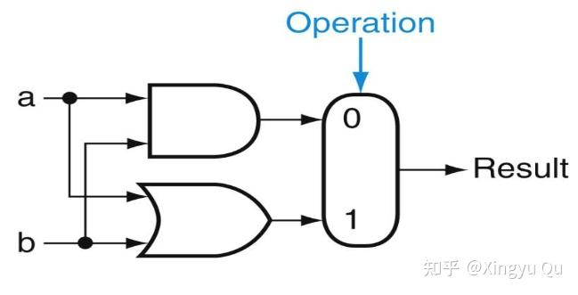
2.一位加法
（1） 二进制的加法分为几步
->对位相加：对应的数字相加，且要承接后一位的进位
->进位
->判断溢出
所以可知 1 个 ALU 需要接收 3 个输入（a,b 两个操作数+carryin 进位标志）、2 个输出（sum+carryout 进位输出）
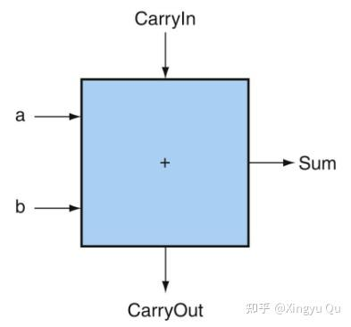
注意，上面描述的是全加器，与之相似还有“半加器”（没有 carryin）。
可以想到，在真实的寄存器之间运算时，最低位的运算最先开始，这一步是没有 carryin 的。
（2）一位全加器的实现
根据不同的输入输出绘制真值表，可以得到：
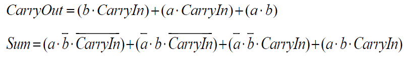
由此添加对应的逻辑组件，绘制逻辑电路图：
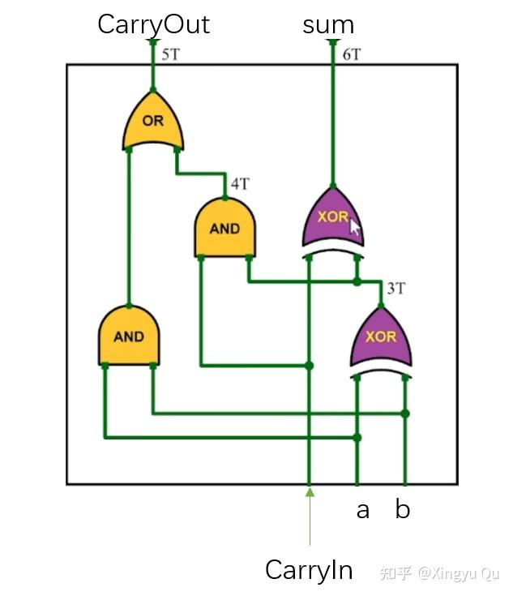
下述实现依据真值表化简逻辑，并尽量减少所需器件。
3.一位 ALU
由此可以设计出包含加减和逻辑运算的一位 ALU，Binvert 表示需不需要将 b 的值取负。
这里有一个重要的细节：即使在最低位计算中，仍然需要使用全加版的 ALU，因为 b 在取反的时候，按补码计数取反和取负并不一致，需要取负加一，这样 binvert 取 1 的时候 carryin 也要取 1，即在之前 carryin 的设计上加上 |binvert 即可。在减法运算的时候 binvert 和 carryin 都置为 1.
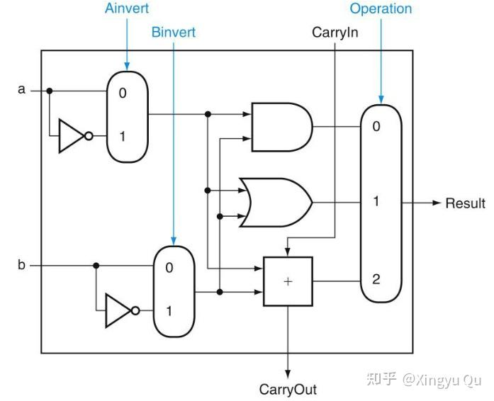
（二）32 位 ALU
串联 32 个 1 位 ALU 可以形成基本的 32 位 ALU，但还需要加入溢出检测与比较逻辑。
1.overflow
什么时候溢出？无非是两种情况，一种是 a,b 的 sign 都是 0，sum 的 sign 是 1；另一种是 a,b 的 sign 是 1，sum 的 sign 是 0.（一正一负不可能溢出）
按照加法器的原理，第一种情况需要 a,b 次高位的进位；第二种情况需要 a,b 次高位不要进位。
由此可得：当 32 位加法的符号位和次高位进位情况不同时，说明发生了 overflow.（如果是无符号数，只看最高位即可）
carryout 已经是数据通路的一部分，因此可以直接用于构造溢出检测逻辑。
2.条件分支指令
（1）小于比较
为了适应 RISC-V 的指令架构，我们还要赋予 ALU 比较的功能，让硬件支持 slt（小于置位）指令。
slt 的效果是将最低位以外的其他位置为 0，如果 rs1<rs2，则将最低位置为 1，否则置为 0.
这样看，需要一个新的多路选择器中的分支（Operation）和一个新的输入（Less），除了最低有效位，其余位的输入均为 0；而最低位的输入依赖于计算 rs1-rs2 的结果，所以需要最高位（符号位）的计算结果，于是我们又设计了一个输出项 set 在最高位的 ALU 上。
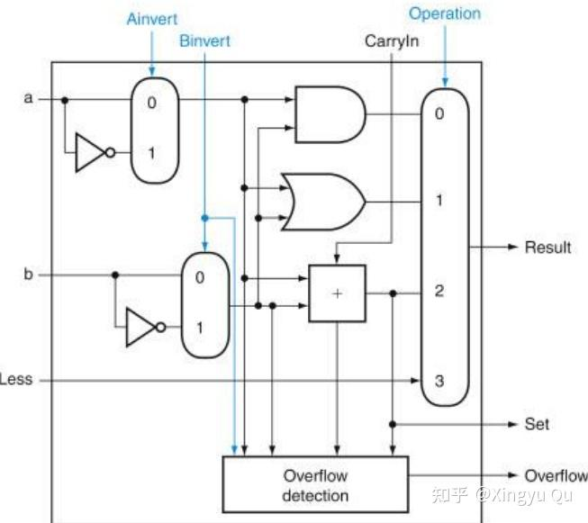
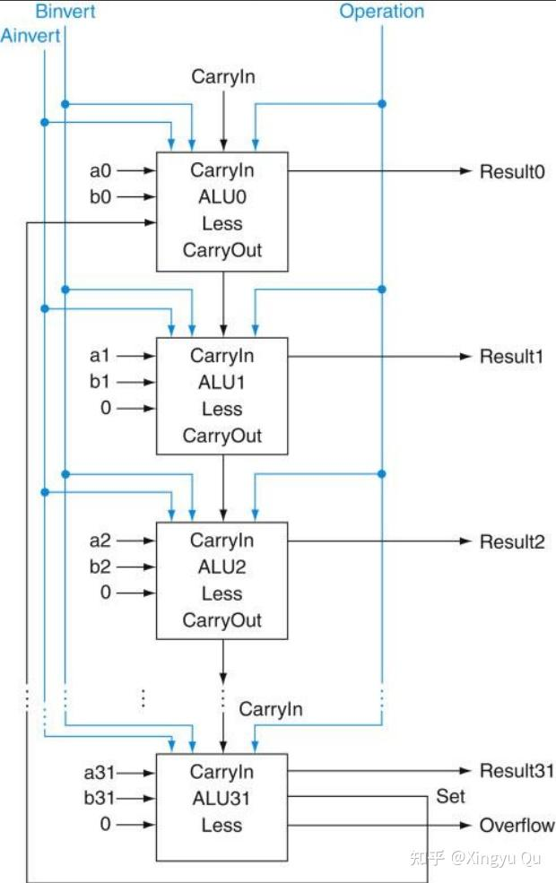
（2）等于比较指令
等于比较比较简单，即根据 a-b 的结果是否为 0 判断。所以我们在最后加上一个把所有位的结果做或运算的部件，增加一个 zero 的输出.
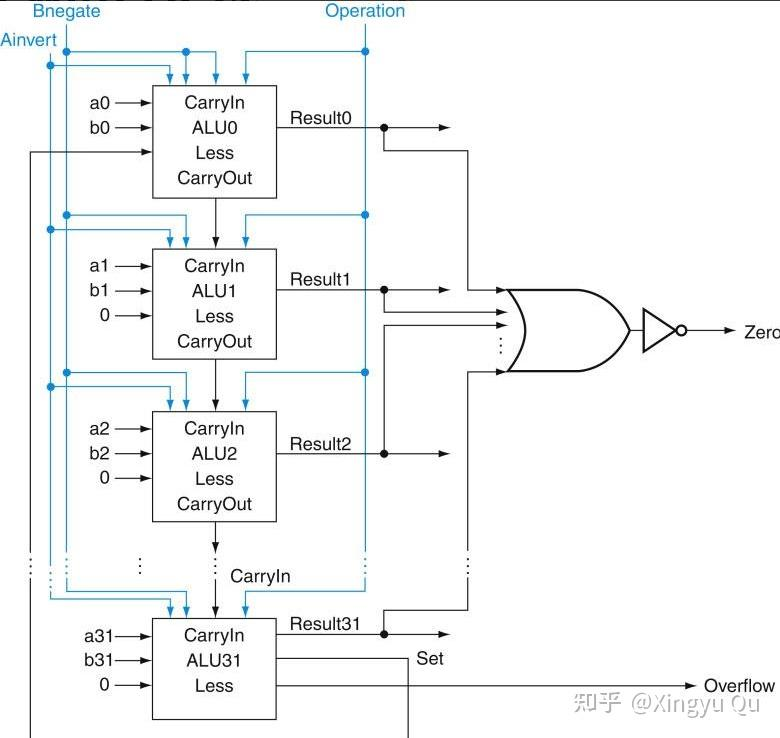
加入小于、等于比较后的 ALU 可以实现 beq, blt, bge 等跳转指令。
至此得到完整的 32 位 ALU，并可将其封装为下图所示的部件：
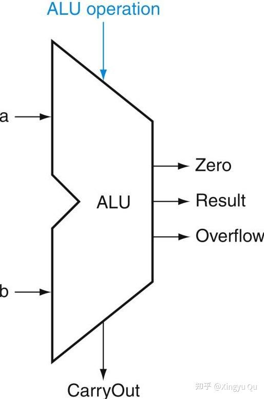
3.RISC-V ALU 的 Verilog 实现
关注上面 ALU 的详细图，发现有三条 ALU 控制线：Ainvert, Binvert, Operation
| ALU控制线 | 功能 |
|---|---|
| 0000 | 与 |
| 0001 | 或 |
| 0010 | 加 |
| 0110 | 减 |
下面给出 RISC-V ALU 的 Verilog 版数据通路
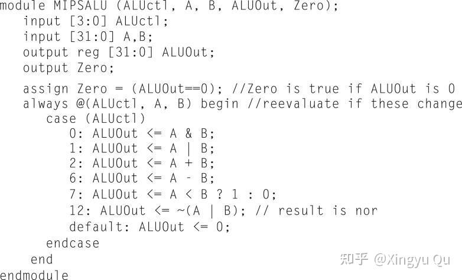
（三）快速加法
串行进位的延迟
在上述 ALU 中，每一位都依赖前一位的进位，关键路径较长，因此需要使用快速进位结构。
符号表示——ai：a 的第 i 位；bi：b 的第 i 位；ci：第 i 位的 carryin
1.硬件限制
对第 i 位来讲，只要 a,b,C 至少有两位是 1，carryout（也就是下一位的 carryin）就是 1 ，可以得到 ci+1 的表达式：
C(i+1) = ai · bi + ai · ci + bi · ci
可以通过不断代换 ci 得到 c31 与 c0 的关系（隐去中间的进位），但是这样会导致硬件过于复杂，我们无法承受这种开销。
2.使用第一级抽象的快速进位：传播和生成
考虑 c2 = a1 · b1 + a1 · c1 + b1 · c1 = a1 · b1 + a1 · c1 + a0 · b0 + （a0 + b0）· c0
可以看到 ai+bi 和 ai·bi 的结构重复出现，将这两个重要的因子定义为（进位）生成 gi 和进位传播 pi
ci+1 = gi + pi · ci
gi = ai · bi ； pi= ai + bi
gi 负责生成进位，pi 负责传播进位；这一分解再次体现了分层抽象在硬件设计中的作用。
由此可以得到 4 位进位如下：
c1=g0+p0·c0
c2=g1+p1·g0+p1·p0·c0
c3=g2+p2·g1+p2·p1·g0+p2·p1·p0·c0
c4=g3+p3·g2+p3·p2·g1+p3·p2·p1·g0+p3·p2·p1·p0·c0
此时进位由独立的超前进位单元生成，而不是沿各位 ALU 串行传播。
即使是这种方式也会产生长长的方程式，接下来使用第二级抽象。
3.使用第二级抽象的快速进位
首先，本讲将上面的4个加法器和其超前进位单元视为单个构建块，考虑用四个块设计成一个16位的加法器，需要再向上抽象一次，增加少量硬件，就可以比原来更快。
P0=p3·p2·p1·p0
P1=p7·p6·p5·p4
P2=p11·p10·p9·p8
P3=p15·p14·p13·p12
使用大写 P 汇总一个 4 位构建块中的传播信号，形成组传播信号。
对于“超级”生成信号，这里只关心4位组的最高有效位是否为有效进位。如果最高位的生成为真，或者低位生成为真且一直到高位中间的传播都为真，也会发生进位。
G0=g3+p3·g2+p3·p2·g1+p3·p2·p1·g0
G1=g7+p7·g6+p7·p6·g5+p7·p6·p5·g4
G2=g11+p11·g10+p11·p10·g9+p11·p10·p9·g8
G3=g15+p15·g14+p15·p14·g13+p15·p14·p13·g12
由此我们得到16位加法器的每一个4位组的进位：
C1=G0+P0c0
C2=G1+P1·G0+P1·P0·c0
C3=G2+P2·G1+P2·P1·G0+P2·P1·P0·c0
C4=G3+P3·G2+P3·P2·G1+P3·P2·P1·G0+P3·P2·P1·P0·c0
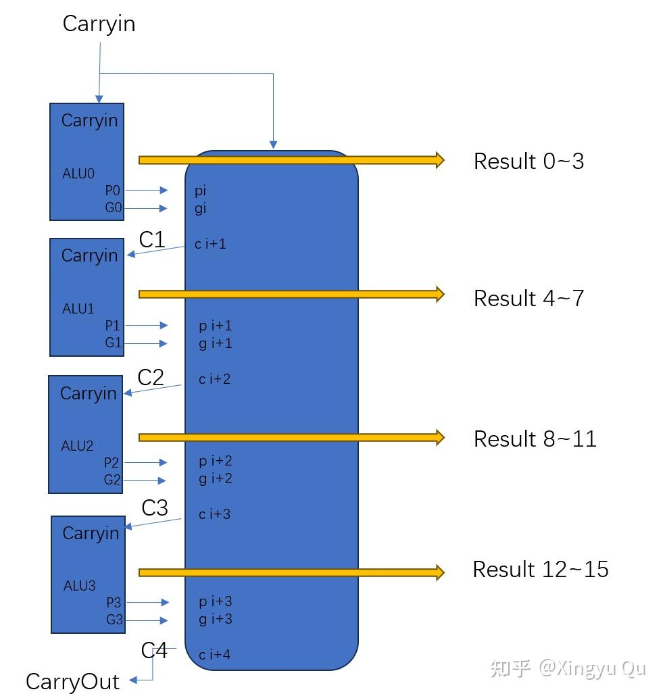
超前进位快，是因为所有逻辑在时钟周期开始的时候同时开始计算，且一旦每个门的输出停止变化，结果也不再变化。通过使用较少的门来发送进位信号，门的输出能力更快地停止变化，因此加法器用时更短。